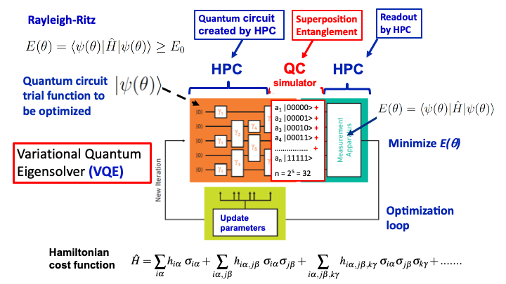
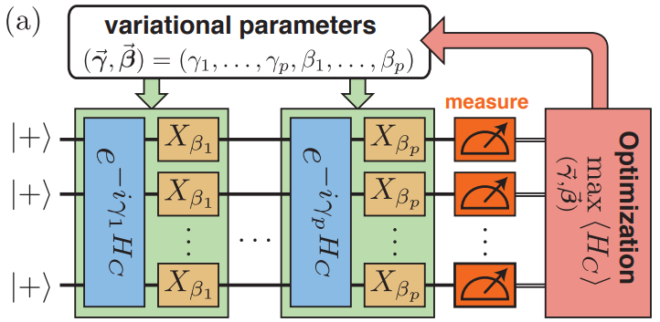

Exploring General and Quantum Optimization
General optimization algorithms aim to find the best solution among a set of possible solutions based on defined criteria. These algorithms can be categorized into various types such as gradient-based methods, evolutionary algorithms, and metaheuristic algorithms.
They are widely used in fields such as machine learning, engineering, finance, and operations research.
Quantum optimization algorithms leverage quantum computing principles to solve optimization problems efficiently. They take advantage of quantum phenomena such as superposition and entanglement to explore multiple solutions simultaneously.
These algorithms have the potential to solve complex optimization problems that are intractable for classical computers.
Quantum variational algorithms are metaheuristics designed to address combinatorial optimization problems of the form:
\( \min_{x \in \{0,1\}^n} f(x) \) (1)
where f is a polynomial function. A VQA consists of two parts: a quantum part and a classical part, which exchange information and alternate successively.
The quantum part is a quantum circuit, defined by a unitary matrix parametrized by d real numbers θ ∈ ℝd. This parameterized circuit is a continuous function U: ℝd → M2n(ℂ) that associates each θ with a unitary matrix applied on n qubits. Once this circuit is executed on the quantum computer, we sample the probability distribution over the solution space {0,1}n at the output.
The classical part performs optimization over θ as follows:
\( \min_{\theta \in \mathbb{R}^d} g(\theta) \)
where the function g: ℝd → ℝ, dependent on U and f, is defined such that the classical optimization solver searches for the optimal parameters θ* such that the probability of measuring an optimal solution from (1) is high.
The Variational Quantum Eigensolver (VQE) is a hybrid quantum-classical algorithm designed for simulating quantum systems, introduced by Peruzzo et al. (2014) and McClean et al. (2015). It finds applications in various quantum simulations, such as solving the molecular electronic Schrödinger equation and modeling systems in condensed matter physics like Fermi– and Bose–Hubbard models.
In this context, we delve into VQE's role in tackling the molecular electronic structure problem, particularly in determining the ground-state energy of a molecular system. The Hamiltonian for such systems, under the Born-Oppenheimer approximation, takes a specific form, where hnuc represents nuclear repulsion energy, and the coefficients hpq and hpqrs are derived from solving a mean-field problem. The transformation of this Hamiltonian into the qubit basis (e.g., Jordan–Wigner, Bravyi–Kitaev) allows it to be expressed using operators acting on qubits.
We then introduce a trial wavefunction ansatz |Ψ(θ⃗)⟩=U(θ⃗)|0⟩ dependent on parameters θ⃗ = (θ1, θ2, …, θm), which define a unitary operator acting on the reference state |0⟩. The variational principle guides us to minimize the expectation value of the Hamiltonian to find the optimal set of variational parameters, providing an upper bound to the true ground-state energy Egs.
Choosing a suitable variational trial ansatz (e.g., unitary coupled-cluster, heuristic), initializing parameters, transforming to the qubit basis, and applying approximations like Trotter–Suzuki are essential steps. Converting the ansatz to a quantum circuit enables its implementation on quantum hardware. Energy measurements, either on quantum hardware or via simulation, yield the energy value based on the Hamiltonian terms' expectation values.
This computed energy feeds into a classical optimizer to update variational parameters iteratively, preparing new quantum circuit states until convergence. The algorithmic workflow is depicted below, showcasing the iterative process of parameter optimization and quantum state preparation until reaching an optimal energy value.
The Adiabetic Theorem: describes the evolution of a quantum system when subjected to a slowly varying Hamiltonian. Mathematically, it can be stated as follows:
Let \( H(t) \) be a time-dependent Hamiltonian, and let \( |n(t) \rangle \) be the instantaneous eigenstates of \( H(t) \) with corresponding eigenvalues \( E_n(t) \). The adiabatic theorem states that if the Hamiltonian changes slowly in time, i.e., if the rate of change of \( H(t) \) is much smaller than the energy gap between the eigenstate \( |n(t) \rangle \) and the rest of the spectrum, then the system remains in its instantaneous eigenstate as it evolves, up to a phase factor.
The Schrödinger equation governing the time evolution of the system is given by:
\[ i\hbar \frac{\partial}{\partial t} |\psi(t)\rangle = H(t) |\psi(t)\rangle \]If the system starts in the \( n \)-th eigenstate \( |n(0)\rangle \) of \( H(0) \) with energy \( E_n(0) \), then the state of the system at time \( t \) is approximately:
\[ |\psi(t)\rangle \approx e^{-i\theta(t)} |n(t)\rangle \]Here, \( \theta(t) \) is a dynamical phase accumulated by the state \( |n(t)\rangle \) due to the time evolution of the system.
We particularly study the Quantum Approximate Optimization Algorithm (QAOA), which represents the reference VQA for solving combinatorial optimization problems, historically applied to the Max-Cut problem. It is a subclass of VQAs that has been extensively studied in the literature.
The quantum circuit of QAOA is parameterized by \( 2p \) real numbers \( \gamma, \beta \), where \( p \in \mathbb{N} \) is a meta-parameter called the circuit depth. The quantum circuit \( U(\gamma, \beta) \) is expressed in terms of the objective function \( f \). Its form originates from the adiabatic theorem and is of interest to the scientific community because it cannot be efficiently simulated by a classical computer.
The optimization function \( g \) is chosen as the average cost of a quantum state produced by the circuit, meaning,
\[ g(\gamma, \beta) = \sum_{x \in \{0,1\}^n} p(\gamma,\beta)(x) f(x), \]
where \( p(\gamma,\beta)(x) \) is the probability of measuring the solution \( x \) at the output of the circuit \( U(\gamma, \beta) \). We will discuss the mathematical properties satisfied by the definitions of \( g \) and \( U \) specific to QAOA.
